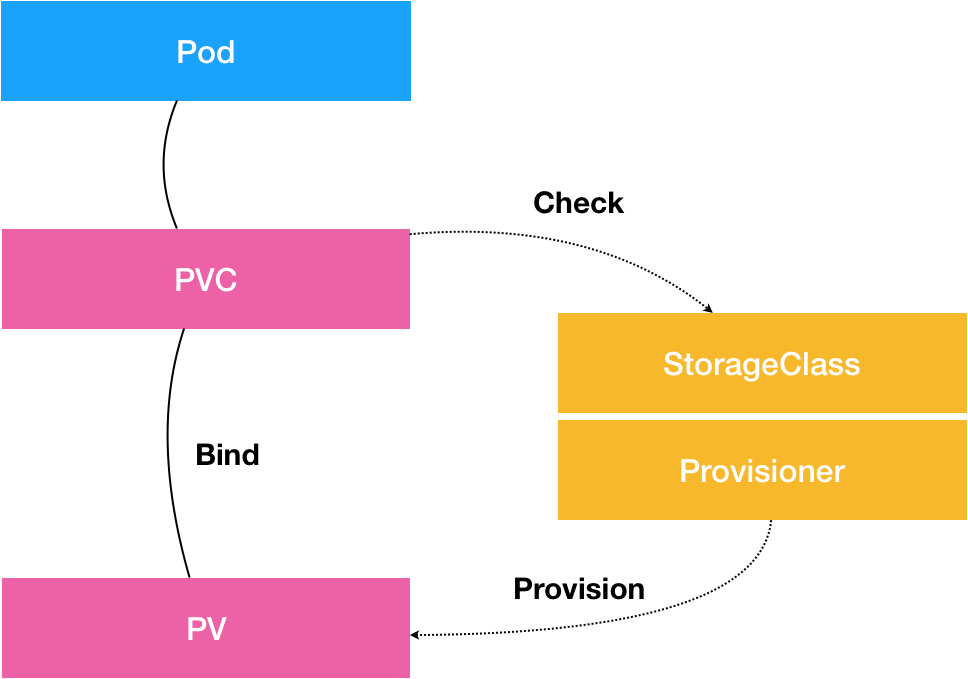

# PV、PVC、StorageClass，这些到底在说啥？
在前面的文章中，我重点为你分析了 Kubernetes 的各种编排能力。
在这些讲解中，你应该已经发现，容器化一个应用比较麻烦的地方，莫过于对其 “状态” 的管理。而最常见的 “状态”，又莫过于存储状态了。
所以，从今天这篇文章开始，我会通过 4 篇文章为你剖析 Kubernetes 项目处理容器持久化存储的核心原理，从而帮助你更好地理解和使用这部分内容。
首先，我们来回忆一下我在第 19 篇文章《深入理解 StatefulSet（二）：存储状态》中，和你分享 StatefulSet 如何管理存储状态的时候，介绍过的 Persistent Volume（PV）和 Persistent Volume Claim（PVC） 这套持久化存储体系。
其中，**PV 描述的，是持久化存储数据卷。** 这个 API 对象主要定义的是一个持久化存储在宿主机上的目录，比如一个 NFS 的挂载目录。
通常情况下，PV 对象是由运维人员事先创建在 Kubernetes 集群里待用的。比如，运维人员可以定义这样一个 NFS 类型的 PV，如下所示：
apiVersion: v1
kind: PersistentVolume
metadata:
name: nfs
spec:
storageClassName: manual
capacity:
storage: 1Gi
accessModes:
- ReadWriteMany
nfs:
server: 10.244.1.4
path: "/"
而 PVC 描述的，则是 Pod 所希望使用的持久化存储的属性。 比如，Volume 存储的大小、可读写权限等等。
PVC 对象通常由开发人员创建；或者以 PVC 模板的方式成为 StatefulSet 的一部分，然后由 StatefulSet 控制器负责创建带编号的 PVC。
比如，开发人员可以声明一个 1 GiB 大小的 PVC，如下所示：
apiVersion: v1
kind: PersistentVolumeClaim
metadata:
name: nfs
spec:
accessModes:
- ReadWriteMany
storageClassName: manual
resources:
requests:
storage: 1Gi
而用户创建的 PVC 要真正被容器使用起来，就必须先和某个符合条件的 PV 进行绑定。这里要检查的条件，包括两部分：
- 第一个条件，当然是 PV 和 PVC 的 spec 字段。比如，PV 的存储（storage）大小，就必须满足 PVC 的要求。
- 而第二个条件，则是 PV 和 PVC 的 storageClassName 字段必须一样。这个机制我会在本篇文章的最后一部分专门介绍。
在成功地将 PVC 和 PV 进行绑定之后，Pod 就能够像使用 hostPath 等常规类型的 Volume 一样，在自己的 YAML 文件里声明使用这个 PVC 了，如下所示：
apiVersion: v1
kind: Pod
metadata:
labels:
role: web-frontend
spec:
containers:
- name: web
image: nginx
ports:
- name: web
containerPort: 80
volumeMounts:
- name: nfs
mountPath: "/usr/share/nginx/html"
volumes:
- name: nfs
persistentVolumeClaim:
claimName: nfs
可以看到，Pod 需要做的，就是在 volumes 字段里声明自己要使用的 PVC 名字。接下来，等这个 Pod 创建之后，kubelet 就会把这个 PVC 所对应的 PV，也就是一个 NFS 类型的 Volume，挂载在这个 Pod 容器内的目录上。
不难看出，PVC 和 PV 的设计，其实跟 “面向对象” 的思想完全一致。
PVC 可以理解为持久化存储的 “接口”，它提供了对某种持久化存储的描述，但不提供具体的实现；而这个持久化存储的实现部分则由 PV 负责完成。
这样做的好处是，作为应用开发者，我们只需要跟 PVC 这个 “接口” 打交道，而不必关心具体的实现是 NFS 还是 Ceph。毕竟这些存储相关的知识太专业了，应该交给专业的人去做。
而在上面的讲述中， 其实还有一个比较棘手的情况。
比如，你在创建 Pod 的时候，系统里并没有合适的 PV 跟它定义的 PVC 绑定，也就是说此时容器想要使用的 Volume 不存在。这时候，Pod 的启动就会报错。
但是，过了一会儿，运维人员也发现了这个情况，所以他赶紧创建了一个对应的 PV。这时候，我们当然希望 Kubernetes 能够再次完成 PVC 和 PV 的绑定操作，从而启动 Pod。
所以在 Kubernetes 中，实际上存在着一个专门处理持久化存储的控制器，叫作 Volume Controller。这个 Volume Controller 维护着多个控制循环，其中有一个循环，扮演的就是撮合 PV 和 PVC 的 “红娘” 的角色。它的名字叫作 PersistentVolumeController。
PersistentVolumeController 会不断地查看当前每一个 PVC，是不是已经处于 Bound（已绑定）状态。如果不是，那它就会遍历所有的、可用的 PV，并尝试将其与这个 “单身” 的 PVC 进行绑定。这样，Kubernetes 就可以保证用户提交的每一个 PVC，只要有合适的 PV 出现，它就能够很快进入绑定状态，从而结束 “单身” 之旅。
而所谓将一个 PV 与 PVC 进行“绑定”，其实就是将这个 PV 对象的名字，填在了 PVC 对象的 spec.volumeName 字段上。所以，接下来 Kubernetes 只要获取到这个 PVC 对象，就一定能够找到它所绑定的 PV。
那么， 这个 PV 对象，又是如何变成容器里的一个持久化存储的呢？
我在前面讲解容器基础的时候，已经为你详细剖析了容器 Volume 的挂载机制。用一句话总结，所谓容器的 Volume，其实就是将一个宿主机上的目录，跟一个容器里的目录绑定挂载在了一起。（你可以借此机会，再回顾一下专栏的第 8 篇文章《白话容器基础（四）：重新认识 Docker 容器》中的相关内容）
而所谓的 “持久化 Volume”，指的就是这个宿主机上的目录，具备 “持久性”。即： 这个目录里面的内容，既不会因为容器的删除而被清理掉，也不会跟当前的宿主机绑定。这样，当容器被重启或者在其他节点上重建出来之后，它仍然能够通过挂载这个 Volume，访问到这些内容。
显然，我们前面使用的 hostPath 和 emptyDir 类型的 Volume 并不具备这个特征：它们既有可能被 kubelet 清理掉，也不能被 “迁移” 到其他节点上。
所以，大多数情况下，持久化 Volume 的实现，往往依赖于一个远程存储服务，比如：远程文件存储（比如，NFS、GlusterFS）、远程块存储（比如，公有云提供的远程磁盘）等等。
而 Kubernetes 需要做的工作，就是使用这些存储服务，来为容器准备一个持久化的宿主机目录，以供将来进行绑定挂载时使用。 而所谓“持久化”，指的是容器在这个目录里写入的文件，都会保存在远程存储中，从而使得这个目录具备了“持久性”。
这个准备 “持久化” 宿主机目录的过程，我们可以形象地称为 “两阶段处理”。
接下来，我通过一个具体的例子为你说明。
当一个 Pod 调度到一个节点上之后，kubelet 就要负责为这个 Pod 创建它的 Volume 目录。默认情况下，kubelet 为 Volume 创建的目录是如下所示的一个宿主机上的路径：
/var/lib/kubelet/pods/<Pod的ID>/volumes/kubernetes.io~<Volume类型>/<Volume名字>
接下来，kubelet 要做的操作就取决于你的 Volume 类型了。
如果你的 Volume 类型是远程块存储，比如 Google Cloud 的 Persistent Disk（GCE 提供的远程磁盘服务），那么 kubelet 就需要先调用 Goolge Cloud 的 API，将它所提供的 Persistent Disk 挂载到 Pod 所在的宿主机上。
备注：你如果不太了解块存储的话，可以直接把它理解为：一块磁盘。
这相当于执行：
$ gcloud compute instances attach-disk <虚拟机名字> --disk <远程磁盘名字>
这一步为虚拟机挂载远程磁盘的操作，对应的正是 “两阶段处理” 的第一阶段。在 Kubernetes 中，我们把这个阶段称为 Attach。
Attach 阶段完成后，为了能够使用这个远程磁盘，kubelet 还要进行第二个操作，即：格式化这个磁盘设备，然后将它挂载到宿主机指定的挂载点上。不难理解，这个挂载点，正是我在前面反复提到的 Volume 的宿主机目录。所以，这一步相当于执行：
# 通过lsblk命令获取磁盘设备ID
$ sudo lsblk
# 格式化成ext4格式
$ sudo mkfs.ext4 -m 0 -F -E lazy_itable_init=0,lazy_journal_init=0,discard /dev/<磁盘设备ID>
# 挂载到挂载点
$ sudo mkdir -p /var/lib/kubelet/pods/<Pod的ID>/volumes/kubernetes.io~<Volume类型>/<Volume名字>
这个将磁盘设备格式化并挂载到 Volume 宿主机目录的操作，对应的正是 “两阶段处理” 的第二个阶段，我们一般称为：Mount。
Mount 阶段完成后，这个 Volume 的宿主机目录就是一个 “持久化” 的目录了，容器在它里面写入的内容，会保存在 Google Cloud 的远程磁盘中。
而如果你的 Volume 类型是远程文件存储（比如 NFS）的话，kubelet 的处理过程就会更简单一些。
因为在这种情况下，kubelet 可以跳过 “第一阶段”（Attach）的操作，这是因为一般来说，远程文件存储并没有一个 “存储设备” 需要挂载在宿主机上。
所以，kubelet 会直接从 “第二阶段”（Mount）开始准备宿主机上的 Volume 目录。
在这一步，kubelet 需要作为 client，将远端 NFS 服务器的目录（比如：“/” 目录），挂载到 Volume 的宿主机目录上，即相当于执行如下所示的命令：
$ mount -t nfs <NFS服务器地址>:/ /var/lib/kubelet/pods/<Pod的ID>/volumes/kubernetes.io~<Volume类型>/<Volume名字>
通过这个挂载操作，Volume 的宿主机目录就成为了一个远程 NFS 目录的挂载点，后面你在这个目录里写入的所有文件，都会被保存在远程 NFS 服务器上。所以，我们也就完成了对这个 Volume 宿主机目录的 “持久化”。
到这里，你可能会有疑问，Kubernetes 又是如何定义和区分这两个阶段的呢？
其实很简单，在具体的 Volume 插件的实现接口上，Kubernetes 分别给这两个阶段提供了两种不同的参数列表：
- 对于 “第一阶段”（Attach），Kubernetes 提供的可用参数是 nodeName，即宿主机的名字。
- 而对于 “第二阶段”（Mount），Kubernetes 提供的可用参数是 dir，即 Volume 的宿主机目录。
所以，作为一个存储插件，你只需要根据自己的需求进行选择和实现即可。在后面关于编写存储插件的文章中，我会对这个过程做深入讲解。
而经过了 “两阶段处理”，我们就得到了一个 “持久化” 的 Volume 宿主机目录。所以，接下来，kubelet 只要把这个 Volume 目录通过 CRI 里的 Mounts 参数，传递给 Docker，然后就可以为 Pod 里的容器挂载这个 “持久化” 的 Volume 了。其实，这一步相当于执行了如下所示的命令：
$ docker run -v /var/lib/kubelet/pods/<Pod的ID>/volumes/kubernetes.io~<Volume类型>/<Volume名字>:/<容器内的目标目录> 我的镜像 ...
以上，就是 Kubernetes 处理 PV 的具体原理了。
备注：对应地，在删除一个 PV 的时候，Kubernetes 也需要 Unmount 和 Dettach 两个阶段来处理。这个过程我就不再详细介绍了，执行 “反向操作” 即可。
实际上，你可能已经发现，这个 PV 的处理流程似乎跟 Pod 以及容器的启动流程没有太多的耦合，只要 kubelet 在向 Docker 发起 CRI 请求之前，确保 “持久化” 的宿主机目录已经处理完毕即可。
所以，在 Kubernetes 中，上述关于 PV 的 “两阶段处理” 流程，是靠独立于 kubelet 主控制循环（Kubelet Sync Loop）之外的两个控制循环来实现的。
其中，“第一阶段” 的 Attach（以及 Dettach）操作，是由 Volume Controller 负责维护的，这个控制循环的名字叫作： AttachDetachController。而它的作用，就是不断地检查每一个 Pod 对应的 PV，和这个 Pod 所在宿主机之间挂载情况。从而决定，是否需要对这个 PV 进行 Attach（或者 Dettach）操作。
需要注意，作为一个 Kubernetes 内置的控制器，Volume Controller 自然是 kube-controller-manager 的一部分。所以，AttachDetachController 也一定是运行在 Master 节点上的。当然，Attach 操作只需要调用公有云或者具体存储项目的 API，并不需要在具体的宿主机上执行操作，所以这个设计没有任何问题。
而 “第二阶段” 的 Mount（以及 Unmount）操作，必须发生在 Pod 对应的宿主机上，所以它必须是 kubelet 组件的一部分。这个控制循环的名字，叫作： VolumeManagerReconciler，它运行起来之后，是一个独立于 kubelet 主循环的 Goroutine。
通过这样将 Volume 的处理同 kubelet 的主循环解耦，Kubernetes 就避免了这些耗时的远程挂载操作拖慢 kubelet 的主控制循环，进而导致 Pod 的创建效率大幅下降的问题。实际上，kubelet 的一个主要设计原则，就是它的主控制循环绝对不可以被 block。这个思想，我在后续的讲述容器运行时的时候还会提到。
在了解了 Kubernetes 的 Volume 处理机制之后，我再来为你介绍这个体系里最后一个重要概念：StorageClass。
我在前面介绍 PV 和 PVC 的时候，曾经提到过，PV 这个对象的创建，是由运维人员完成的。但是，在大规模的生产环境里，这其实是一个非常麻烦的工作。
这是因为，一个大规模的 Kubernetes 集群里很可能有成千上万个 PVC，这就意味着运维人员必须得事先创建出成千上万个 PV。更麻烦的是，随着新的 PVC 不断被提交，运维人员就不得不继续添加新的、能满足条件的 PV，否则新的 Pod 就会因为 PVC 绑定不到 PV 而失败。在实际操作中，这几乎没办法靠人工做到。
所以，Kubernetes 为我们提供了一套可以自动创建 PV 的机制，即：Dynamic Provisioning。
相比之下，前面人工管理 PV 的方式就叫作 Static Provisioning。
Dynamic Provisioning 机制工作的核心，在于一个名叫 StorageClass 的 API 对象。
而 StorageClass 对象的作用，其实就是创建 PV 的模板。
具体地说，StorageClass 对象会定义如下两个部分内容：
- 第一，PV 的属性。比如，存储类型、Volume 的大小等等。
- 第二，创建这种 PV 需要用到的存储插件。比如，Ceph 等等。
有了这样两个信息之后，Kubernetes 就能够根据用户提交的 PVC，找到一个对应的 StorageClass 了。然后，Kubernetes 就会调用该 StorageClass 声明的存储插件，创建出需要的 PV。
举个例子，假如我们的 Volume 的类型是 GCE 的 Persistent Disk 的话，运维人员就需要定义一个如下所示的 StorageClass：
apiVersion: storage.k8s.io/v1
kind: StorageClass
metadata:
name: block-service
provisioner: kubernetes.io/gce-pd
parameters:
type: pd-ssd
在这个 YAML 文件里，我们定义了一个名叫 block-service 的 StorageClass。
这个 StorageClass 的 provisioner 字段的值是：kubernetes.io/gce-pd，这正是 Kubernetes 内置的 GCE PD 存储插件的名字。
而这个 StorageClass 的 parameters 字段，就是 PV 的参数。比如：上面例子里的 type=pd-ssd，指的是这个 PV 的类型是 “SSD 格式的 GCE 远程磁盘”。
需要注意的是，由于需要使用 GCE Persistent Disk，上面这个例子只有在 GCE 提供的 Kubernetes 服务里才能实践。如果你想使用我们之前部署在本地的 Kubernetes 集群以及 Rook 存储服务的话，你的 StorageClass 需要使用如下所示的 YAML 文件来定义：
apiVersion: ceph.rook.io/v1beta1
kind: Pool
metadata:
name: replicapool
namespace: rook-ceph
spec:
replicated:
size: 3
---
apiVersion: storage.k8s.io/v1
kind: StorageClass
metadata:
name: block-service
provisioner: ceph.rook.io/block
parameters:
pool: replicapool
#The value of "clusterNamespace" MUST be the same as the one in which your rook cluster exist
clusterNamespace: rook-ceph
在这个 YAML 文件中，我们定义的还是一个名叫 block-service 的 StorageClass，只不过它声明使的存储插件是由 Rook 项目。
有了 StorageClass 的 YAML 文件之后，运维人员就可以在 Kubernetes 里创建这个 StorageClass 了：
$ kubectl create -f sc.yaml
这时候，作为应用开发者，我们只需要在 PVC 里指定要使用的 StorageClass 名字即可，如下所示：
apiVersion: v1
kind: PersistentVolumeClaim
metadata:
name: claim1
spec:
accessModes:
- ReadWriteOnce
storageClassName: block-service
resources:
requests:
storage: 30Gi
可以看到，我们在这个 PVC 里添加了一个叫作 storageClassName 的字段，用于指定该 PVC 所要使用的 StorageClass 的名字是：block-service。
以 Google Cloud 为例。
当我们通过 kubectl create 创建上述 PVC 对象之后，Kubernetes 就会调用 Google Cloud 的 API，创建出一块 SSD 格式的 Persistent Disk。然后，再使用这个 Persistent Disk 的信息，自动创建出一个对应的 PV 对象。
我们可以一起来实践一下这个过程（如果使用 Rook 的话下面的流程也是一样的，只不过 Rook 创建出的是 Ceph 类型的 PV）：
$ kubectl create -f pvc.yaml
可以看到，我们创建的 PVC 会绑定一个 Kubernetes 自动创建的 PV，如下所示：
$ kubectl describe pvc claim1
Name: claim1
Namespace: default
StorageClass: block-service
Status: Bound
Volume: pvc-e5578707-c626-11e6-baf6-08002729a32b
Labels: <none>
Capacity: 30Gi
Access Modes: RWO
No Events.
而且，通过查看这个自动创建的 PV 的属性，你就可以看到它跟我们在 PVC 里声明的存储的属性是一致的，如下所示：
$ kubectl describe pv pvc-e5578707-c626-11e6-baf6-08002729a32b
Name: pvc-e5578707-c626-11e6-baf6-08002729a32b
Labels: <none>
StorageClass: block-service
Status: Bound
Claim: default/claim1
Reclaim Policy: Delete
Access Modes: RWO
Capacity: 30Gi
...
No events.
此外，你还可以看到，这个自动创建出来的 PV 的 StorageClass 字段的值，也是 block-service。 这是因为，Kubernetes 只会将 StorageClass 相同的 PVC 和 PV 绑定起来。
有了 Dynamic Provisioning 机制，运维人员只需要在 Kubernetes 集群里创建出数量有限的 StorageClass 对象就可以了。这就好比，运维人员在 Kubernetes 集群里创建出了各种各样的 PV 模板。这时候，当开发人员提交了包含 StorageClass 字段的 PVC 之后，Kubernetes 就会根据这个 StorageClass 创建出对应的 PV。
Kubernetes 的官方文档里已经列出了默认支持 Dynamic Provisioning 的内置存储插件。而对于不在文档里的插件，比如 NFS，或者其他非内置存储插件，你其实可以通过 kubernetes-incubator/external-storage 这个库来自己编写一个外部插件完成这个工作。像我们之前部署的 Rook，已经内置了 external-storage 的实现，所以 Rook 是完全支持 Dynamic Provisioning 特性的。
例子:
Local StorageClass:
apiVersion: storage.k8s.io/v1
kind: StorageClass
metadata:
name: local-storage
provisioner: kubernetes.io/no-provisioner
volumeBindingMode: WaitForFirstConsumer
Local volumes do not currently support dynamic provisioning, however a StorageClass should still be created to delay volume binding until Pod scheduling. This is specified by the WaitForFirstConsumer volume binding mode.
Delaying volume binding allows the scheduler to consider all of a Pod's scheduling constraints when choosing an appropriate PersistentVolume for a PersistentVolumeClaim.
需要注意的是，StorageClass 并不是专门为了 Dynamic Provisioning 而设计的。
比如，在本篇一开始的例子里，我在 PV 和 PVC 里都声明了 storageClassName=manual。而我的集群里，实际上并没有一个名叫 manual 的 StorageClass 对象。这完全没有问题，这个时候 Kubernetes 进行的是 Static Provisioning，但在做绑定决策的时候，它依然会考虑 PV 和 PVC 的 StorageClass 定义。
而这么做的好处也很明显：这个 PVC 和 PV 的绑定关系，就完全在我自己的掌控之中。
这里，你可能会有疑问，我在之前讲解 StatefulSet 存储状态的例子时，好像并没有声明 StorageClass 啊？
实际上，如果你的集群已经开启了名叫 DefaultStorageClass 的 Admission Plugin，它就会为 PVC 和 PV 自动添加一个默认的 StorageClass；否则，PVC 的 storageClassName 的值就是 “”，这也意味着它只能够跟 storageClassName 也是 “” 的 PV 进行绑定。
总结
在今天的分享中，我为你详细解释了 PVC 和 PV 的设计与实现原理，并为你阐述了 StorageClass 到底是干什么用的。这些概念之间的关系，可以用如下所示的一幅示意图描述：

从图中我们可以看到，在这个体系中：
PVC 描述的，是 Pod 想要使用的持久化存储的属性，比如存储的大小、读写权限等。
PV 描述的，则是一个具体的 Volume 的属性，比如 Volume 的类型、挂载目录、远程存储服务器地址等。
而 StorageClass 的作用，则是充当 PV 的模板。并且，只有同属于一个 StorageClass 的 PV 和 PVC，才可以绑定在一起。
当然，StorageClass 的另一个重要作用，是指定 PV 的 Provisioner（存储插件）。这时候，如果你的存储插件支持 Dynamic Provisioning 的话，Kubernetes 就可以自动为你创建 PV 了。
基于上述讲述，为了统一概念和方便叙述，在本专栏中，我以后凡是提到 “Volume”，指的就是一个远程存储服务挂载在宿主机上的持久化目录；而 “PV”，指的是这个 Volume 在 Kubernetes 里的 API 对象。
需要注意的是，这套容器持久化存储体系，完全是 Kubernetes 项目自己负责管理的，并不依赖于 docker volume 命令和 Docker 的存储插件。当然，这套体系本身就比 docker volume 命令的诞生时间还要早得多。
容器持久化存储涉及的概念比较多，试着总结一下整体流程:
- 用户提交请求创建 pod，Kubernetes 发现这个 pod 声明使用了 PVC，那就靠 PersistentVolumeController 帮它找一个 PV 配对。
- 没有现成的 PV，就去找对应的 StorageClass，帮它新创建一个 PV，然后和 PVC 完成绑定。
- 新创建的 PV，还只是一个 API 对象，需要经过 “两阶段处理” 变成宿主机上的 “持久化 Volume” 才真正有用：
- 第一阶段由运行在 master 上的 AttachDetachController 负责，为这个 PV 完成 Attach 操作，为宿主机挂载远程磁盘；
- 第二阶段是运行在每个节点上 kubelet 组件的内部，把第一步 attach 的远程磁盘 mount 到宿主机目录。这个控制循环叫 VolumeManagerReconciler，运行在独立的 Goroutine，不会阻塞 kubelet 主循环。
完成这两步，PV 对应的 “持久化 Volume” 就准备好了，POD 可以正常启动，将 “持久化 Volume” 挂载在容器内指定的路径。
思考题
在了解了 PV、PVC 的设计和实现原理之后，你是否依然觉得它有 “过度设计” 的嫌疑？或者，你是否有更加简单、足以解决你 90% 需求的 Volume 的用法？